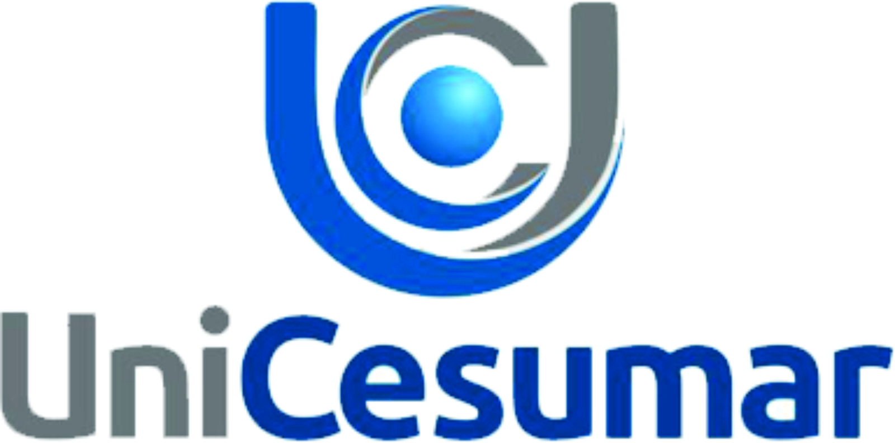
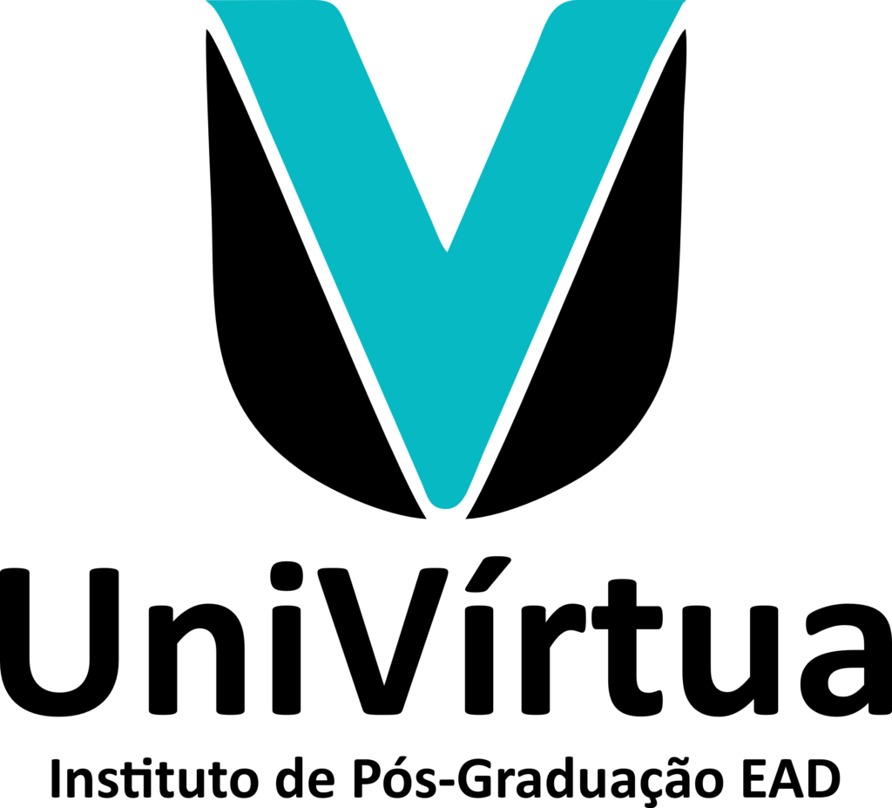
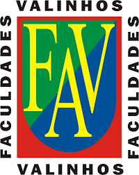

Experiências
Estágio DEV Backend:
 Accenture - 07/2025 - Atual
Accenture - 07/2025 - Atual
Desenvolvo códigos, analiso dados e versiono projetos.
Accenture - 07/2025 - Atual
Estágio em Tecnologia:
ATEduc SME - 08/2023 à 08/2024
Administrava o controle de equipamentos e periféricos,
preparando materiais para o atendimento às NAEDs e as escolas municipais.
Gerente:
ETM - 07/2012 à 10/2022
Assessorava e gerenciava contas, controle de gastos e logística.
Controlador Operacional:
 Brink's - 05/2007 a 06/2012
Brink's - 05/2007 a 06/2012
Desenvolvia o redirecionamento de rotas dos veículos da empresa,
escala dos funcionários e a instalação de novos projetos com a área de tecnologia.
Brink's - 05/2007 a 06/2012
Formação
Graduação em Ciência da Computação
SPTech School - (Previsão) 07/2028
Graduação em Engenharia de Software

Unicesumar - (Previsão) 12/2028
Pós-graduação de Desenvolvimento e Programação com Python
Unicesumar - 12/2024
MBA em Business Intelligence e Data Warehouse

Univirtua - 08/2024
MBA em Big Data e Cloud Computing
Univirtua - 08/2024
Tecnólogo em Análise e Desenvolvimento de Sistemas
Unicesumar - 07/2024
Graduação em Comunicação Social

Faculdades de Valinhos - 11/2002